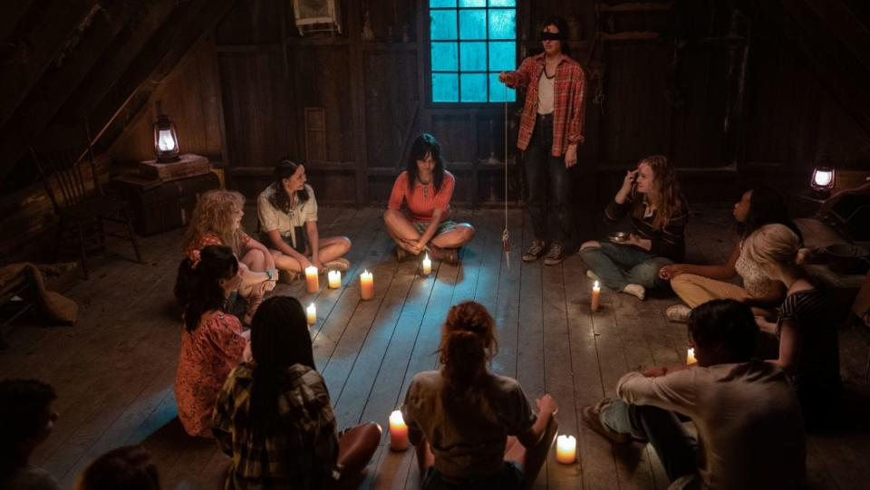

Fan Theories
Supernatural or Psychological
One of the biggest debates among fans is whether the strange occurrences in the wilderness are truly supernatural or just a mix of psychological trauma and group hysteria. Lottie’s visions, Taissa’s sleepwalking, and the eerie symbols scattered throughout the woods suggest something mystical is at play. Some fans believe the girls are being influenced by an ancient force, possibly tied to the symbol or the land itself. Others argue that starvation, stress, and isolation pushed them into mass delusion, making them see signs that weren’t really there. Could the wilderness have a life of its own, or is it all in their heads?
The Antler Queen

One of the show’s most chilling mysteries is the identity of the Antler Queen, the masked figure who appears to be leading the ritualistic hunts in the wilderness. Many fans originally suspected Lottie, since she becomes a spiritual leader among the survivors, but others argue that the title could shift from person to person. Some theories suggest that Shauna, Van, or even Misty could take up the role at different points. There’s also speculation that the Antler Queen isn’t a single person but a persona taken on by whoever is in power at a given time.
Pit Girl

One of the most haunting scenes in Yellowjackets is the opening sequence of the first episode, where a terrified girl runs through the snow-covered wilderness before falling into a hidden pit and being brutally hunted by the rest of the group. Known by fans as "Pit Girl," her identity remains one of the show’s biggest mysteries.Some fans believe that Pit Girl is Mari, Gen, or another lesser-known survivor. These characters have played smaller roles so far, but their fate remains unknown. If one of them is Pit Girl, it could suggest that they either resisted the group’s rituals or became an outcast, leading to their execution.
Other Theories
- The Symbol's Meaning: Some believe the symbol is linked to a cult that existed in the wilderness before the crash, while others think it’s a warning sign or a protection symbol used by a past civilization.
- Post Rescue Crimes: The present-day survivors are hiding something big. Many fans theorize after they were rescued it was hard for them to ditch their cult like rituals and did something after they were rescued to keep another team member silent.
- Yellow Tint Theory: Some believe that the strong yellow/ golden tint used in the wilderness scenes are supposed to represent how the girl's are romanticizing their time there. And that the show will later on reveal what the camp actually looks like.
- Cabin Fire: At the end of season two the cabin they had found had burned down. Many people theorize who it could be. The girl's believe it was Coach Ben, because he went missing that same night. But, fans believe he is just a red herring, and think it could be the 'other' Tai, Van, or even Shauna.